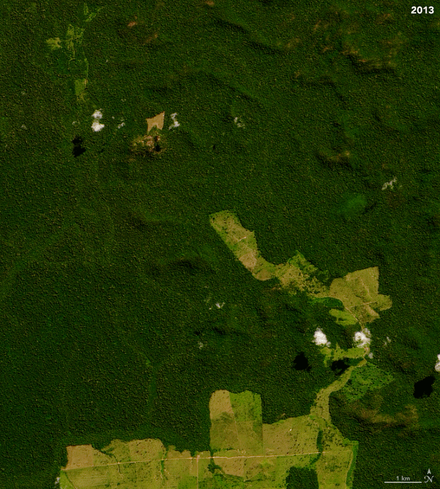
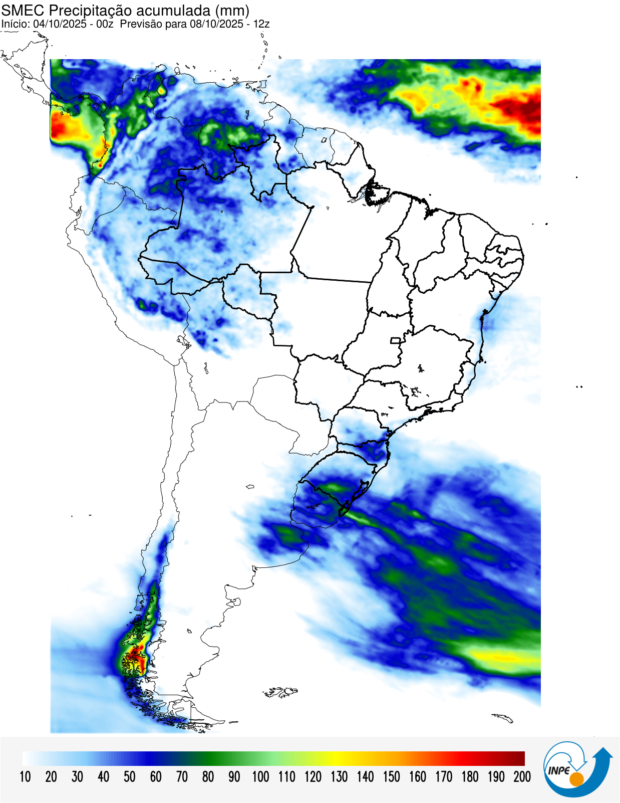

O Planeta Sob Ameaça
Esta é uma jornada interativa que utiliza dados de satélite para visualizar um dos problemas ambientais mais urgentes do nosso tempo. Role para começar.
A região com maior atividade nas últimas 24h é:
Calculando...Esta é uma jornada interativa que utiliza dados de satélite para visualizar um dos problemas ambientais mais urgentes do nosso tempo. Role para começar.
Nossa análise se concentra na América do Sul, uma região de biodiversidade incomparável, mas que enfrenta desafios ambientais significativos, especialmente na Bacia Amazônica.
O Brasil abriga a maior parte da Floresta Amazônica. À medida que nos aproximamos, a escala da floresta se torna evidente, assim como sua vulnerabilidade.
Explore os focos de incêndio detectados pelos satélites da NASA. Arraste o slider para viajar no tempo e visualizar os dados de cada um dos últimos 7 dias.
Visualizar os dados é o primeiro passo. A conscientização gerada por essas tecnologias é fundamental para impulsionar ações de conservação e políticas de proteção ambiental mais eficazes.
Imagens de Radar (SAR) revelam a expansão da agricultura e o padrão "espinha de peixe" do desmatamento ao longo de décadas. As áreas em roxo/rosa representam a floresta intacta, enquanto verde/amarelo indicam áreas desmatadas.

A animação abaixo, com dados do satélite Landsat, mostra a progressão anual do desmatamento na mesma região.
Além de monitorar focos existentes, podemos usar dados de satélite para prever futuras áreas de risco. Combinando informações como a umidade do solo, vegetação e dados de precipitação acumulada, como os do mapa abaixo, é possível aplicar modelos de previsão.
Um exemplo é a Fórmula de Monte Alegre (FMA), que calcula um índice de perigo de incêndio com base nesses fatores, nos ajudando a antecipar e a agir preventivamente.
